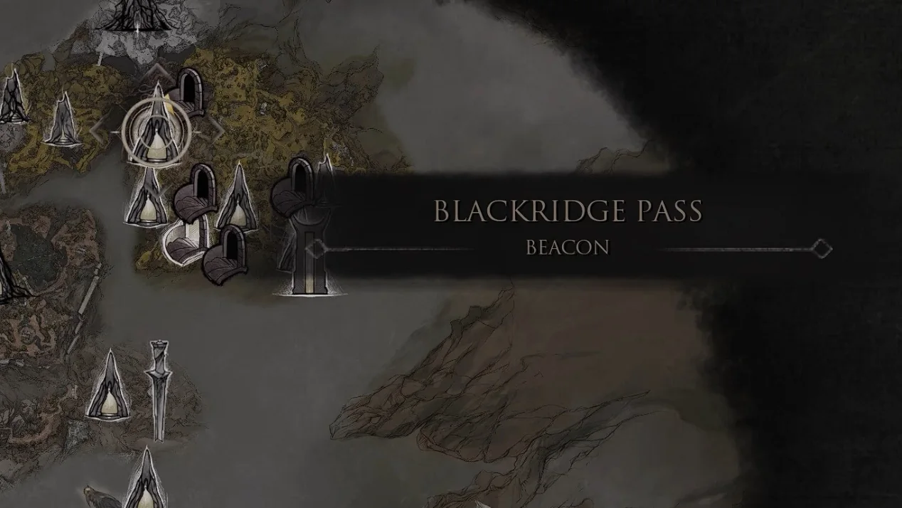
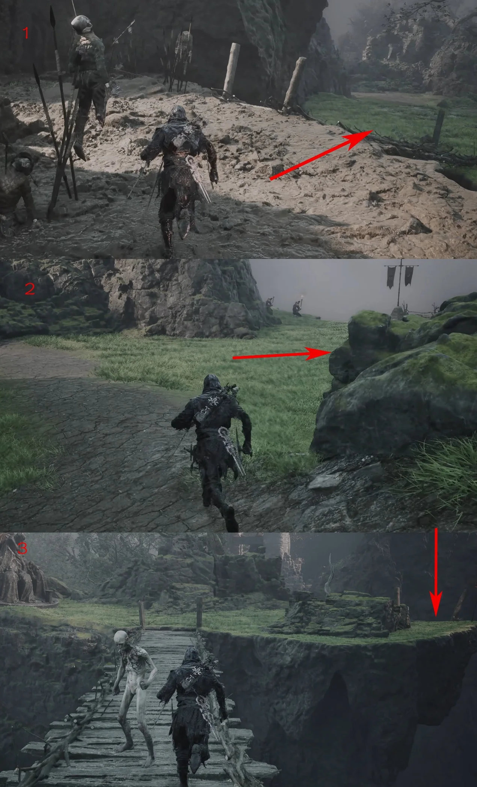
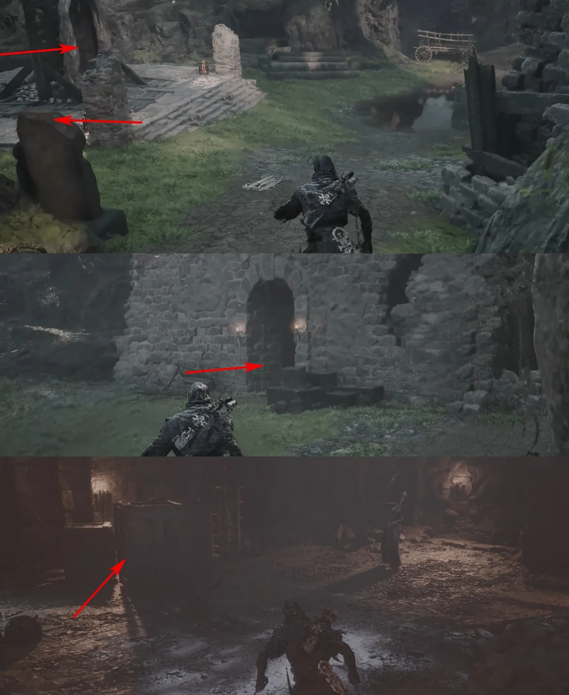
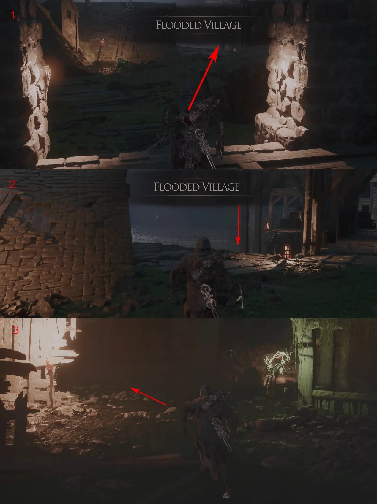
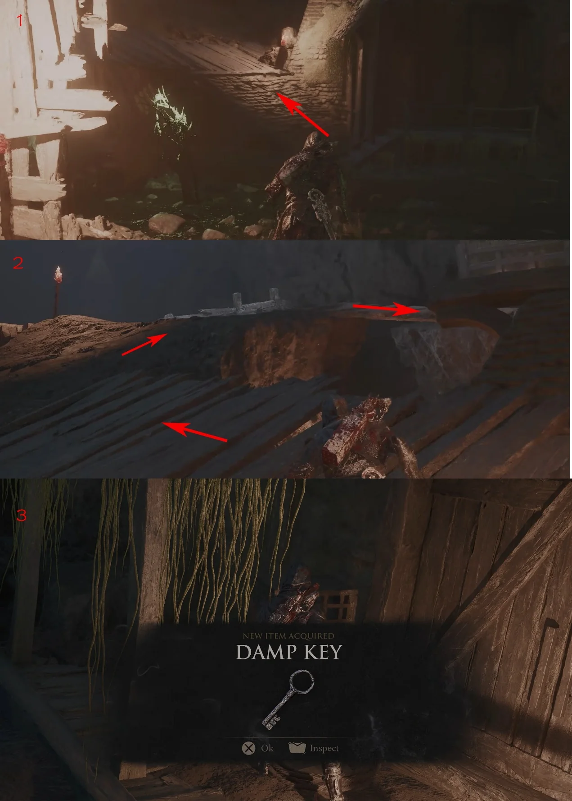
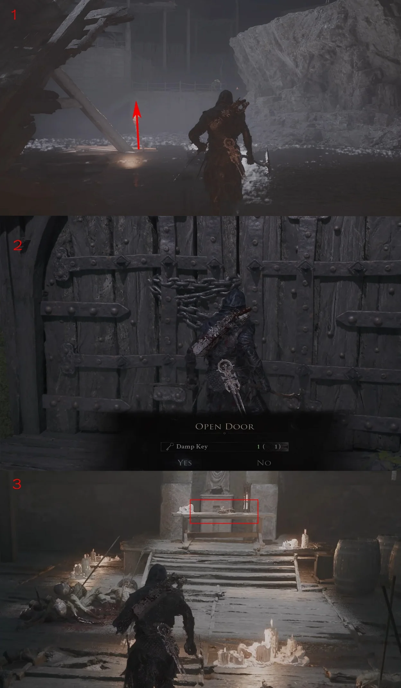

The Forgotten Crossbow is behind a locked upper-floor door in Flooded Village. The route first collects the Damp Key inside the dungeon.
Region
Fainweald
Location
Flooded Village
Type
Sidearm

Route 01Fast travel to Blackridge Pass Beacon.

Route 02Leave from behind the Beacon and follow the marked route across the two wooden bridges.

Route 03Break the boards behind the stone doorway to expose the entrance. Continue through the newly opened passage.

Route 04You are now in Flooded Village. Follow the annotated turns through the village.

Route 05Collect the Damp Key at the marked pickup.

Route 06Turn back, drop down, and enter the building ahead. Climb to the second floor, open the door with the Damp Key, then take the Forgotten Crossbow from the table.